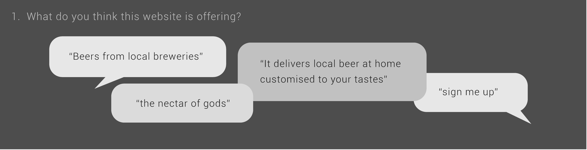
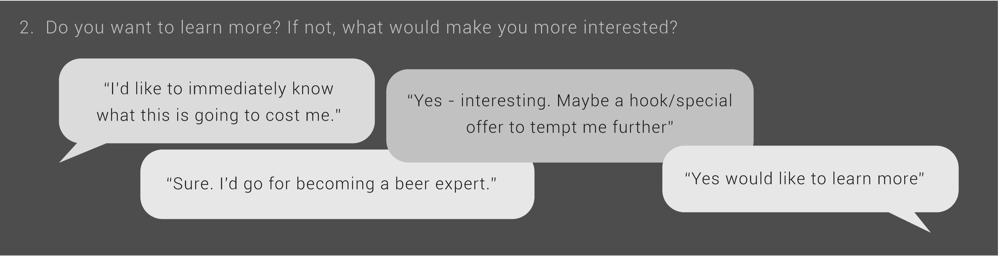
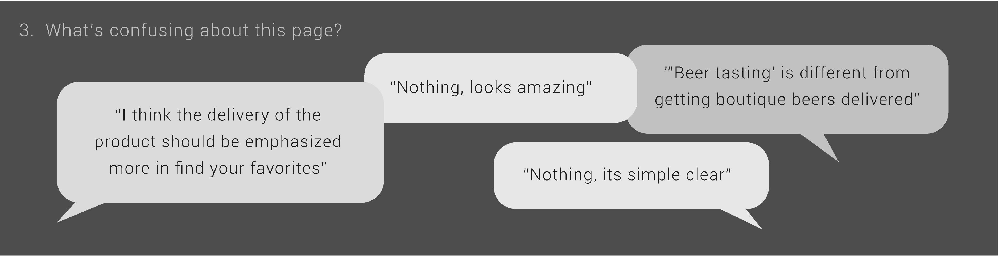
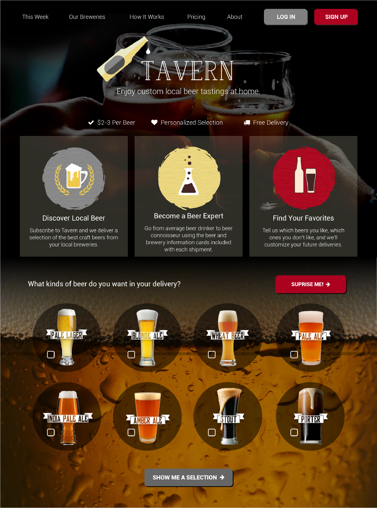

New Business Idea
With a classmate, I am developing a new online business, “Tavern.” Tavern is a subscription local craft beer delivery service similar to Blue Apron. On-line customers select the number of beers they want to receive and how often they would like to receive them. Tavern then delivers an assortment of beers from small local craft breweries. Each beer comes with an information card. The information is meant to help people learn more about the beer they are drinking as well as about the brewery. Finally, customers can rate the different beers and Tavern will customize their future deliveries accordingly.
Initial Interest
To verify interest for a beer delivery service like Tavern, we ran a small Google Consumer Survey about the topic. The results were mixed so we conducted more research.
Business Strategy
The craft beer market has been rapidly increasing for the past few years. However, many of the craft breweries have difficulty selling their products in stores and restaurants because of unfamiliar branding. To help the craft breweries expand their market share, we are developing a business plan in which small craft breweries sell their product to online customers through a subscription service such as Tavern.
User Testing
As part of business development for Tavern, I created a homepage for Tavern using Illustrator. With this design, I ran a question test on UsabilityHub. There were three questions:
  Prototypes
I adjusted the designs and the copy as I received answers. By the final version of the design, the answers were increasingly positive and people seemed genuinely interested in Tavern.
